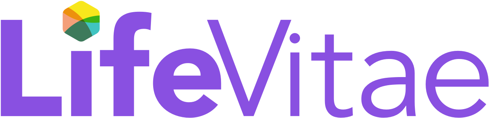

YOUR WORK GOES HERE

Instagram/TikTok content, content calendar, product visual, atau analytics screenshot Toko Kue Amala.Toko Kue Amala
Mendukung pengelolaan Instagram & TikTok melalui content planning, short-form video, carousel, copywriting, scheduling, dan promotional content.
+4.3%
Instagram follower growth
+44.4%
Peak post views